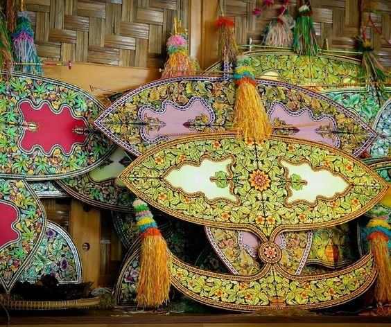

Pada kebiasaannya wau akan dimainkan oleh dua orang, iaitu seorang juruanjung yang memegang wau dan seorang jurutarik yang memegang tali. Apabila angin bertiup maka tali akan ditarik melawan arus angin dengan cara menghulur dan menarik talinya sehinggalah wau tersebut tinggi di udara. Kilauan cahaya matahari akan menambah cantik lagi wau yang dihias berwarna-warni. 